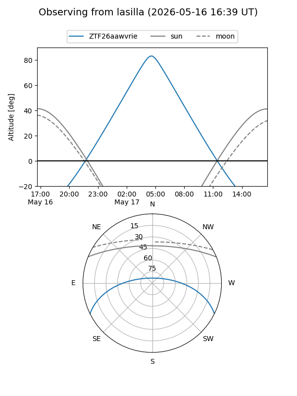
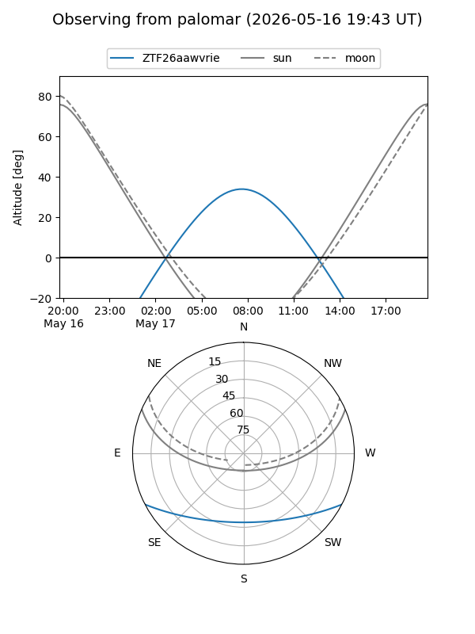

ZTF26aawvrie
Target ZTF26aawvrie at 2026-05-17 10:00
Aliases and brokers:
FINK: link
Lasair: link
ALeRCE: link
alt names
ZTF26aawvrie (ztf,fink_ztf)
Coordinates:
equatorial (ra, dec) = 232.1488,-22.56546
equatorial (HMS+DMS) = 15:28:35.70,-22:33:55.65
galactic (l, b) = (344.1551,+27.45817)
Flags:
Photometry:
last ztfg=18.97
2 ztfg detections
Lightcurve
Visibility


Additional plots